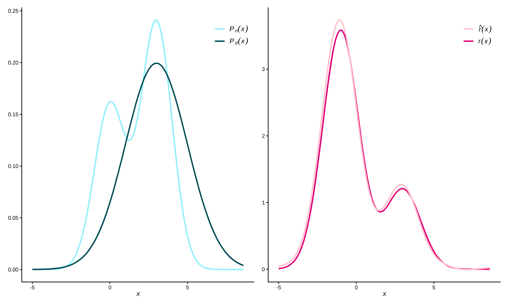

Overview
This package provides functionality to directly estimate a density ratio without estimating the numerator and denominator density separately. Density ratio estimation serves many purposes, for example, prediction, outlier detection, change-point detection in time-series, importance weighting under domain adaptation (i.e., sample selection bias) and evaluation of synthetic data utility. The key idea is that differences between data distributions can be captured in their density ratio, which is estimated over the entire multivariate space of the data. Subsequently, the density ratio values can be used to summarize the dissimilarity between the two distributions in a discrepancy measure.

Features
-
Fast: Computationally intensive code is executed in
C++usingRcppandRcppArmadillo. -
Automatic: Good default hyperparameters that can be optimized in cross-validation (we do recommend understanding those parameters before using
densityratioin practice). -
Complete: Several density ratio estimation methods, such as unconstrained least-squares importance fitting (
ulsif()), Kullback-Leibler importance estimation procedure (kliep()), kernel mean matching (kmm()), ratio of estimated densities (naive()), spectral density ratio estimation (spectral()and least-squares heterodistributional subspace search (lhss()). -
User-friendly: Simple user interface, default
predict(),print()andsummary()functions for all density ratio estimation methods; built-in data sets for quick testing.
Installation
You can install the development version of densityratio from R-universe with:
install.packages('densityratio', repos = 'https://thomvolker.r-universe.dev')Usage
The package contains several functions to estimate the density ratio between the numerator data and the denominator data. To illustrate the functionality, we make use of the in-built simulated data sets numerator_data and denominator_data, that both consist of the same five variables.
Minimal example
library(densityratio)
head(numerator_data)
#> # A tibble: 6 × 5
#> x1 x2 x3 x4 x5
#> <fct> <fct> <dbl> <dbl> <dbl>
#> 1 A G1 -0.0299 0.967 -1.26
#> 2 C G1 2.29 -0.475 2.40
#> 3 A G1 1.37 0.577 -0.172
#> 4 B G2 1.44 -0.193 -0.708
#> 5 A G1 1.01 2.23 2.01
#> 6 C G2 1.83 0.762 3.71
fit <- ulsif(
df_numerator = numerator_data$x5,
df_denominator = denominator_data$x5,
nsigma = 5,
nlambda = 5
)
class(fit)
#> [1] "ulsif"We can ask for the summary() of the estimated density ratio object, that contains the optimal kernel weights (optimized using cross-validation) and a measure of discrepancy between the numerator and denominator densities.
summary(fit)
#>
#> Call:
#> ulsif(df_numerator = numerator_data$x5, df_denominator = denominator_data$x5, nsigma = 5, nlambda = 5)
#>
#> Kernel Information:
#> Kernel type: Gaussian with L2 norm distances
#> Number of kernels: 200
#>
#> Optimal sigma: 0.3726142
#> Optimal lambda: 0.03162278
#> Optimal kernel weights: num [1:201] 0.43926 0.01016 0.00407 0.01563 0.01503 ...
#>
#> Pearson divergence between P(nu) and P(de): 0.2801
#> For a two-sample homogeneity test, use 'summary(x, test = TRUE)'.To formally evaluate whether the numerator and denominator densities differ significantly, you can perform a two-sample homogeneity test as follows.
summary(fit, test = TRUE)
#>
#> Call:
#> ulsif(df_numerator = numerator_data$x5, df_denominator = denominator_data$x5, nsigma = 5, nlambda = 5)
#>
#> Kernel Information:
#> Kernel type: Gaussian with L2 norm distances
#> Number of kernels: 200
#>
#> Optimal sigma: 0.3726142
#> Optimal lambda: 0.03162278
#> Optimal kernel weights: num [1:201] 0.43926 0.01016 0.00407 0.01563 0.01503 ...
#>
#> Pearson divergence between P(nu) and P(de): 0.2801
#> Pr(P(nu)=P(de)) < .001
#> Bonferroni-corrected for testing with r(x) = P(nu)/P(de) AND r*(x) = P(de)/P(nu).The probability that numerator and denominator samples share a common data generating mechanism is very small.
The ulsif-object also contains the (hyper-)parameters used in estimating the density ratio, such as the centers used in constructing the Gaussian kernels (fit$centers), the different bandwidth parameters (fit$sigma) and the regularization parameters (fit$lambda). Using these variables, we can obtain the estimated density ratio using predict().
# obtain predictions for the numerator samples
newx5 <- seq(from = -3, to = 6, by = 0.05)
pred <- predict(fit, newdata = newx5)
ggplot() +
geom_point(aes(x = newx5, y = pred, col = "ulsif estimates")) +
stat_function(
mapping = aes(col = "True density ratio"),
fun = dratio,
args = list(p = 0.4, dif = 3, mu = 3, sd = 2),
linewidth = 1
) +
theme_classic() +
scale_color_manual(name = NULL, values = c("#de0277", "purple")) +
theme(
legend.position = "inside",
legend.position.inside = c(0.8, 0.9),
text = element_text(size = 50),
legend.text = element_text(size = 50),
)
Scaling
By default, all functions in the densityratio package standardize the data to the numerator means and standard deviations. This is done to ensure that the importance of each variable in the kernel estimates is not dependent on the scale of the data. By setting scale = "denominator" one can scale the data to the means and standard deviations of the denominator data, and by setting scale = FALSE the data remains on the original scale.
Categorical data
All of the functions in the densityratio package accept categorical variables types. However, note that internally, these variables are one-hot encoded, which can lead to a high-dimensional feature-space.
summary(numerator_data$x1)
#> A B C
#> 351 339 310
summary(denominator_data$x1)
#> A B C
#> 252 232 516
fit_cat <- ulsif(
df_numerator = numerator_data$x1,
df_denominator = denominator_data$x1
)
#> Warning in check.sigma(nsigma, sigma_quantile, sigma, dist_nu): There are duplicate values in 'sigma', only the unique values are used.
aggregate(
predict(fit_cat) ~ numerator_data$x1,
FUN = unique
)
#> numerator_data$x1 predict(fit_cat)
#> 1 A 1.3005360
#> 2 B 1.3574809
#> 3 C 0.6379142
table(numerator_data$x1) / table(denominator_data$x1)
#>
#> A B C
#> 1.3928571 1.4612069 0.6007752This transformation can give a reasonable estimate of the ratio of proportions in the different data sets (although there is some regularization applied such that the estimated odds are closer to one than seen in the real data).
Full data example
After transforming all variables to numeric variables, it is possible to calculate the density ratio over the entire multivariate space of the data.
fit_all <- ulsif(
df_numerator = numerator_data,
df_denominator = denominator_data
)
summary(fit_all, test = TRUE, parallel = TRUE)
#>
#> Call:
#> ulsif(df_numerator = numerator_data, df_denominator = denominator_data)
#>
#> Kernel Information:
#> Kernel type: Gaussian with L2 norm distances
#> Number of kernels: 200
#>
#> Optimal sigma: 1.065369
#> Optimal lambda: 0.1623777
#> Optimal kernel weights: num [1:201] 0.5691 0.1511 0.0959 0.0118 0.0149 ...
#>
#> Pearson divergence between P(nu) and P(de): 0.4629
#> Pr(P(nu)=P(de)) < .001
#> Bonferroni-corrected for testing with r(x) = P(nu)/P(de) AND r*(x) = P(de)/P(nu).Other density ratio estimation functions
Besides ulsif(), the package contains several other functions to estimate a density ratio.
-
naive()estimates the numerator and denominator densities separately, and subsequently takes there ratio. -
kliep()estimates the density ratio directly through the Kullback-Leibler importance estimation procedure. -
kmm()estimates the density ratio through kernel mean matching. -
lhss()estimates the density ratio in a subspace where the two distributions are most different using least-squares heterodistributional subspace search. -
spectral()estimates the density ratio using a spectral series approach.
We display kliep() and naive() as examples here. The other functions are displayed in the Get Started vignette.
fit_naive <- naive(
df_numerator = numerator_data$x5,
df_denominator = denominator_data$x5
)
fit_kliep <- kliep(
df_numerator = numerator_data$x5,
df_denominator = denominator_data$x5
)
pred_naive <- predict(fit_naive, newdata = newx5)
pred_kliep <- predict(fit_kliep, newdata = newx5)
ggplot(data = NULL, aes(x = newx5)) +
geom_point(aes(y = pred, col = "ulsif estimates")) +
geom_point(aes(y = pred_naive, col = "naive estimates")) +
geom_point(aes(y = pred_kliep, col = "kliep estimates")) +
stat_function(aes(x = NULL, col = "True density ratio"),
fun = dratio, args = list(p = 0.4, dif = 3, mu = 3, sd = 2),
linewidth = 1
) +
theme_classic() +
scale_color_manual(name = NULL, values = c("pink", "#512970", "#de0277", "purple")) +
theme(
legend.position = "inside",
legend.position.inside = c(0.8, 0.9),
text = element_text(size = 50),
legend.text = element_text(size = 50),
)
The figure directly shows that ulsif() and kliep() come rather close to the true density ratio function in this example, and outperform the naive() solution.
Contributions
This package is still in development, and I’ll be happy to take feedback and suggestions. Please submit these through GitHub Issues.
Resources
Books
- General information about the density ratio estimation framework: Sugiyama, Suzuki and Kanamori (2012). Density Ratio Estimation in Machine Learning
Papers
Density ratio estimation for the evaluation of the utility of synthetic data: Volker, De Wolf and Van Kesteren (2023). Assessing the utility of synthetic data: A density ratio perspective
Density ratio estimation for covariate shift: Huang, Smola, Gretton, Borgwardt and Schölkopf (2007). Correcting sample selection bias by unlabeled data
High-dimensional density ratio estimation through a spectral series approach: Izbicki, Lee and Schafer (2014). High-dimensional density ratio estimation with extensions to approximate likelihood computation
Least-squares density ratio estimation: Sugiyama, Hido and Kanamori (2009). A least-squares approach to direct importance estimation
How to cite
Volker, T.B., Poses, C. & Van Kesteren, E.J. (2023). densityratio: Distribution comparison through density ratio estimation. https://doi.org/10.5281/zenodo.8307818